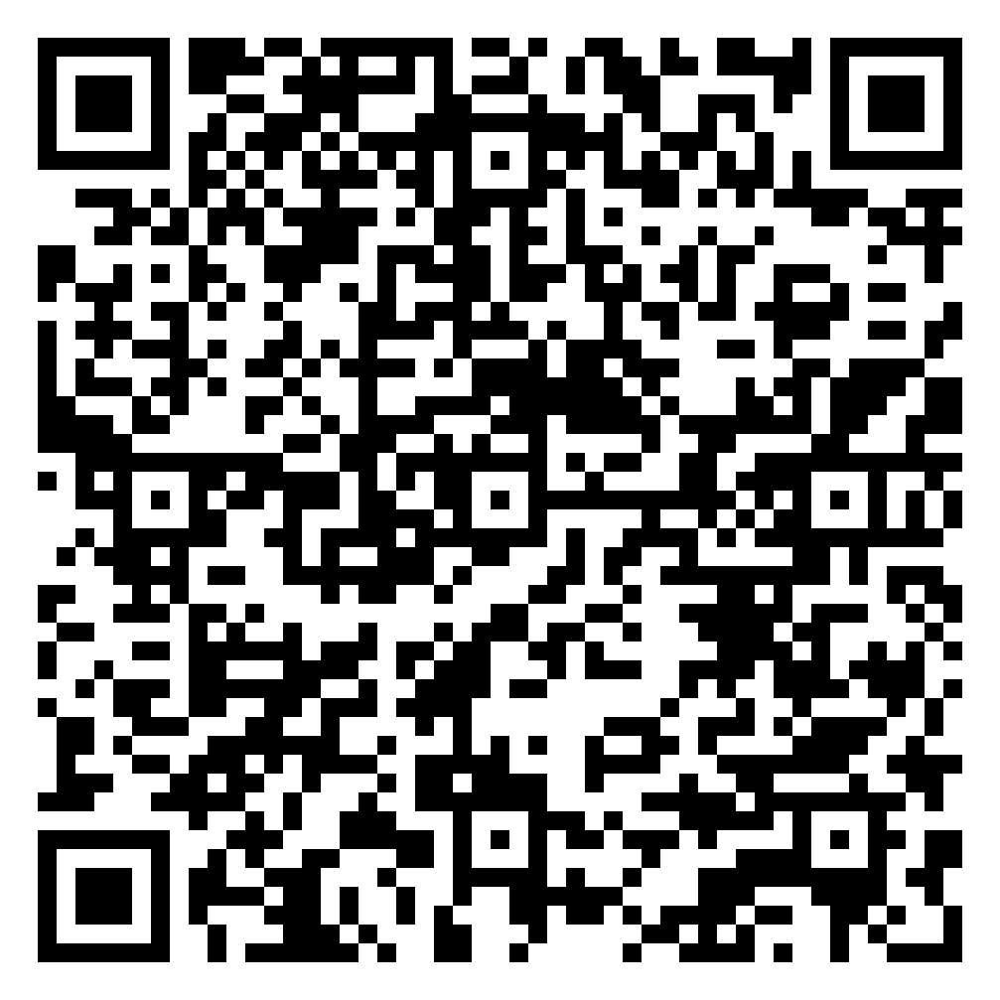

O ingresso universitário não-tradicional
O ensino superior foi instituído no Brasil em 1909, com a criação da Escola Universitária Livre de Manáos – hoje, Universidade Federal do Amazonas. Ao longo do tempo, foi estabelecido o vestibular como forma de ingresso dos estudantes que, desde então, se dedicam em função do renomado ensino gratuito.
Desse modo, os elaboradores dos exames passaram a adaptar o processo seletivo. Atualmente, as instituições optam majoritariamente pelo modelo tradicional de teste. No entanto, desde 2018 o acesso tem sido mais flexível.
Isso porque, as entidades como Unicamp e Unesp oferecem a modalidade de ingresso por medalhas em olimpíadas científicas. A pontuação se dá de diferentes modos consoante a faculdade. Para tal, é necessário atentar-se ao edital e aos procedimentos exigidos.
Nesse contexto, instituições como a Rede Sesi-SP oportunizam aos seus alunos a realização de olimpíadas do conhecimento. Os alunos do atual ensino médio na unidade de Osasco, desde 2016 convivem com a participação em busca de medalhas.
Nos anos pandêmicos de 2020 e 2021, apesar de terem sido divulgadas aos alunos, as competições não se mostraram atrativas, sobretudo pelo desconhecimento dos alunos no que diz respeito ao processo seletivo atrelado às medalhas, além do cenário global.

Somente no ano de 2022, o colégio ofereceu a inscrição dos discentes nas provas:
- OBB - Olimpíada Brasileira de Biologia;
- Canguru de Matemática (medalha aceita pela Unicamp);
- OBA - Olimpíada Brasileira de Astronomia e Astronáutica (maio);
- OBR - Olimpíada Brasileira de Robótica;
- ONC - Olimpíada Nacional de Ciências;
- ONHB - Olimpíada Nacional de História Brasileira.
Portanto, o início de um curso superior a partir do desempenho em provas externas é uma realidade para os alunos do Ensino Médio. Assim, quem foi contemplado por medalha de olimpíadas do conhecimento tem maiores chances. No entanto, aos que outrora desconheciam a modalidade, o tempo de sentir-se motivado é agora.

Unicamp
Alguns documentos desta universidade para o Vestibular 2023 já foram divulgados. As inscrições são gratuitas e estão previstas para acontecerem de novembro (2022) a janeiro (2023).
Estão aptos para a seleção estudantes de escolas públicas ou privadas, que tenham participado de competições do conhecimento no Ensino Médio, tendo sido medalhistas ou atingido um ótimo desempenho. As pontuações exigidas e as medalhas olímpicas aceitas por cada curso, assim como a disponibilidade de vagas podem ser encontradas no site da Comvest.
Para inscrever-se, o candidato deve anexar até dois documentos, um para cada opção de curso. A classificação é dada pela ordem decrescente da pontuação obtida pela olimpíada de conhecimento, de acordo com a tabela e conforme as regras do Edital.
Para informações sobre o último processo realizado, acesse: https://www.comvest.unicamp.br/vestibulares-anteriores/ingresso-2022/vagas-olimpicas-2022/
É possível acompanhar a divulgação de documentos e verificar as pontuações e vagas para o ano de 2023 acessando o QR code a seguir:
Unesp
Na Universidade Estadual Paulista, esse formato de processo seletivo conta com a gratuidade na inscrição e exige o histórico escolar do Ensino Médio, além do documento comprobatório da premiação em olimpíada ou competição de conhecimento com patível com a opção de curso.
O Manual do Candidato referente ao vestibular para 2022, bem como as relações de cursos e medalhas podem ser integralmente acessados no QR code abaixo.
